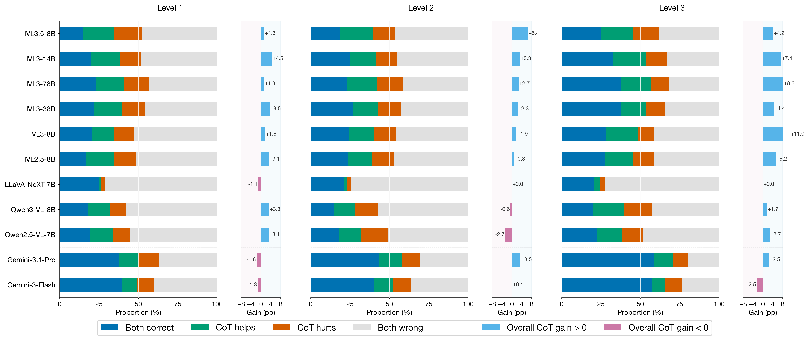

Discussion Subpage
Zero-shot CoT: A Double Edged Sword

At the aggregate level, Zero-shot CoT improves final accuracy by helping models resolve harder compositional dependencies. However, every tested model also shows a non-trivial set of regressions where previously correct NoCoT predictions become incorrect.
This double-edged pattern indicates that current VLMs still rely on fragile shortcut matching for part of their performance. CoT is most beneficial in high-level/event-centric reasoning, but can inject extra noise into lower-level perceptual counting.
Back to Main Page